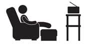

Kumandayı gören oldu mu?
En son bebeğin elinde miydi? Geçmiş olsun. Günümüzde hiçbir bilinçli anne çocuğuna televizyon izletmez. Ve günümüzde hiçbir bilinçli anne çocuğuna televizyon izletmeden duramaz.
Bak, ben olması gerekeni anlatmıyorum. Anlattıklarım sadece başına gelecekler. Bebek ya da bebekler evde. Ve sen bütün gün evdesin. Çocuğu tüm gün oyalayacak bir şeyler arıyorsun ve maalesef yetemiyorsun. O televizyon bir kere açılıyor. Ve sonra kendini sabah 7’de çizgi film izlerken görüyorsun. Ben çocuk sahibi olmadan önce, ikizleri olan bir arkadaşıma, “Hayat nasıl?” diye sordum. “Bu sabah saat 5’te çizgi film izliyordum, hayat böyle” demişti. Abartmıyormuş, ben de yaptım. Elimden başka bir şey gelmedi. Kapalı tuttum. Elimden geldiğince izletmemeye çalıştım. İzletmediğim konusunda kendimi ikna ettim. Ama şunu çok merak ediyorum, nasıl oluyor da bütün çizgi filmleri ezbere biliyorum! Belki de ezberim kuvvetlidir, ondandır, olamaz mı?
Kreşe başladık ve televizyon olayı son buldu. Bütün günü kreşte televizyonsuz geçirdiler ve uykuya kadarki iki saatte de televizyonu açmadık, birlikte oynayarak vakit geçirdik. Tabii bu erken uyuyan çocuklar için geçerli. Bence çocukları geç uyuyan ebeveynler için hayatın kuralları yeniden yazılmalı. Onlar için ayıp, günah, yazık gibi kavramlar olmasın. Onlar televizyon izletebilsin, ellerine bilgisayar, cep telefonu, nükleer silah ne buluyorlarsa versinler ve kimse onları ayıplamasın. Bazı geceler nefes alabilmek için, sadece biraz nefes alabilmek için çocuklarına kaşık kaşık uyku ilaçları içerebilsinler ve bu kimseye garip gelmesin.
Hadi gözlerinizi kapatın ve çocuğu gece 12’den önce uyumayan o bedbaht anneler için dua edin.
Gelgelelim hafta sonları var. Hani eskiden saat 10 gibi kalktığın, uzuuun kahvaltılar yaptığın, bacaklarını uzatıp televizyon karşısında keyif kahveni içtiğin, evinde davetler falan verdiğin o hafta sonlarından bahsediyorum.
Vaka Analizi
Bütün hafta çalıştın, yoruldun, eve gelince de bebekle ilgilendin ve nihayet hafta sonu geldi. Evde sana bakan dünya kadar iş ve ıhhh ııııhhh hıııı diye mızıklayan bir bebekle karşı karşıyasın. Mevsimlerden sonbahar ya da kış. Hafta sonunu planlıyorsun.
a-Alışveriş merkezine gidip bütün gün çocuğu o havasız ve enerji yüklü alanda tutup boş boş turlayabilirsin.
b-Kayınvalidene ya da annene gidebilirsin.
c-Televizyonu açabilir, çocuk çizgi film izlerken bacaklarını uzatıp bir kahve içebilir ya da eşinle sohbet edebilir ya da camdan dışarıya bakabilir ya da anlamsızca dinlenebilirsin.
d-Hiçbiri.
Hiçbiri dediğim şu:
Çocuk hasta olur diye avm’ye gitmedin. Avm’ye gitmediysen kayınvalidene zaten gitme… Sabahın köründe kalktın sessiz, televizyonsuz ve huzur dolu bir evde sabah sporu yaptın bebeğinle. Eveeet önce kollar, sonra bacaklaaarr… Sonra o sakin ve mutlu bebişi mama sandalyesine oturttun ve şarkılar söyleyerek kahvaltı hazırladınız. Ahhh, kuğu gibi süzülüyorsun mutfakta.
Ne huzuuur… Sonra babayı uyandırıyorsunuz, bebek sana sanki bir oyuncak bebekmiş gibi eşlik ediyor. Hep birlikte pazar kahvaltısına oturuyorsunuz. Sohbet ederek, keyifle kahvaltı ediyorsunuz. Arada bebeğe de masadakilerden uzatıyorsun, kuş gibi besleniyor. Sonra sizinki mama sandalyesinde uyuyakalıyor. Üç saatlik bir öğlen uykusuna yatırıyorsun onu. O üç saat senin.
Dinleniyorsun. Evin işi kendiliğinden bitiyor. Üç saat sonra uyanıyor sizinki, karnı acıkmış, ayyy ne güzel yedi çorbasını. Sonra… Hadi şimdi oyun zamanı, önce bul-tak kovalar, biraz puzzle, biraz evcilik, biraz kukla şov, biraz o, biraz bu… Akşama kadar, saat 9 olup da bebek uyuyana kadar oyun oynuyorsunuz. Tam hayallerindeki pazar. YETER aç gözlerini. Yok böyle bir pazar ve böyle bir çocuk. Olsaydı ben yapardım, hem de 9 tane.
Hadi gerçekleri konuşalım. Bir noktadan sonra elinden bir şey gelmeyecek ve o televizyonu açacaksın. Burada kilit ifade şu: Hiç değil, az. Hiç açmamak ve hiç izletmemek büyük başarı. Yapabilene selam olsun.
Ama az izletmek elimizde. Ben az izletmeyi becerebilenlerdenim. Çocuğun televizyon önündeki aç, aç, aç, aç, aç….. diye ağlamalarına direndim. Kendi istediğim zamanlarda, kendi istediğim çizgi filmleri açtım ve oturup film izliyormuş gibi izlediler, izliyorlar. En sık yapılan hatalardan biri televizyonu çocuk izlemese de açık bırakmak. Çocuklar oyun oynayacakları zaman (oyuncaklarla, benimle ya da kendi aralarında), ilk önce gidip televizyonu kapattım. Şimdi, hadi bakalım şunu oynuyoruz televizyonu kapatın, dediğimde direnmiyorlar ve koşup kapatıyorlar.
Bununla birlikte kendim de televizyon izlemiyorum. Hayatımda hiçbir zaman önemli bir yeri olmamıştır. Çocuklardan sonra tamamen kaldırdım. Eşim izlemeyi sever. Ancak izleyecekse başka bir odada izler. Sen ve eşin bangır bangır dizi izleyip film seyredeceksin de çocuğa yasak diyeceksin! Hiç adil değil.
Benim gibi üç çocuğu olan bir arkadaşım, sırf çocukları televizyon izlemesin diye, evine televizyon almadığını söyledi. Sonuçta ne olduğunu bilmedikleri bir şey için özlem duymazlar diyor. Sadece akşamları duvara istediğim çizgi filmleri projeksiyon ile yansıtıyorum ve onlara sinema saati yapıyorum diyor. Bu da bir yöntem. Ama pek yapılası değil gibi.
Aaaa daha tuhaf bir hikâye. İlk çocuğu 8 yaşında ikinci çocuğu 4 yaşında olan bir arkadaşım şunu anlattı. Büyük olan çocuğum tam televizyon izleyip de bir şeyler anlamaya başladığı yaşa geldiğinde ikinci çocuğum oldu ve hiç televizyon izlemedik. Kızım sekiz yaşına geldi ve evimizde neredeyse hiç televizyon izlenmiyordu. Bir gün okuldan eve yüzü asık geldi ve “Anne arkadaşlarım hep televizyonda çıkan bir şeylerden bahsediyorlar, aptal gibi onlara bakıyorum” dedi.
İşte bu… Çocuğu televizyonun karşısına oturtup aptallaştırma ve ona hiç televizyon izletmeyip yine aptallaştırma. Yani çocuk bilsin Arı Maya kim, Disneyland kaç bucak, Mickey’le Mini arasında nasıl bir münasebet var.